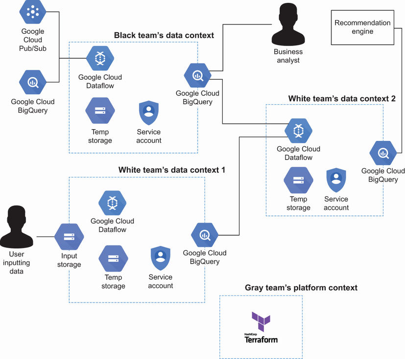
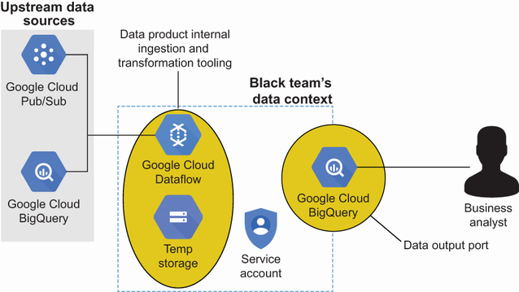
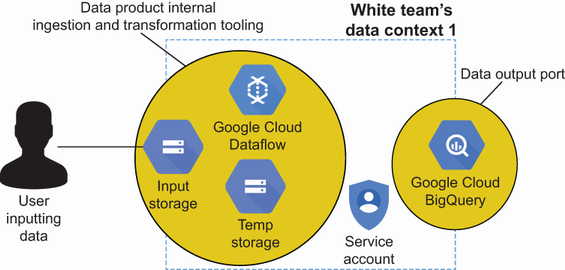
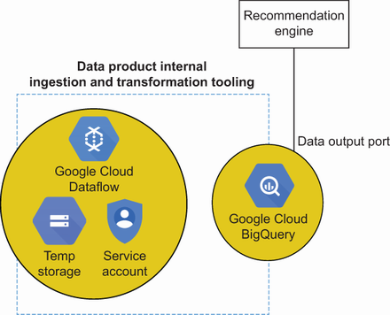
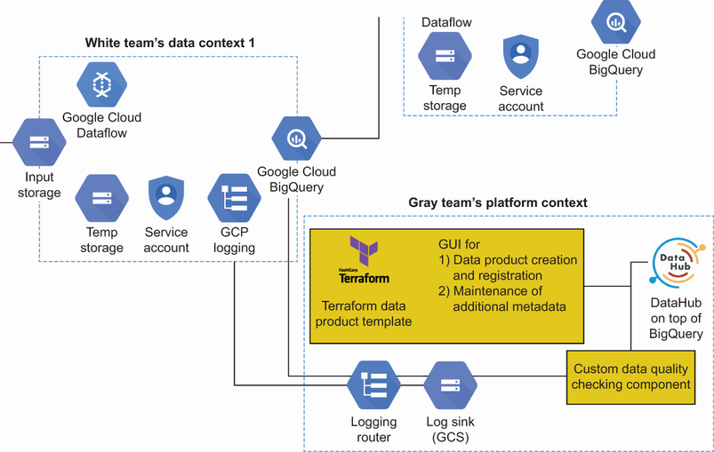
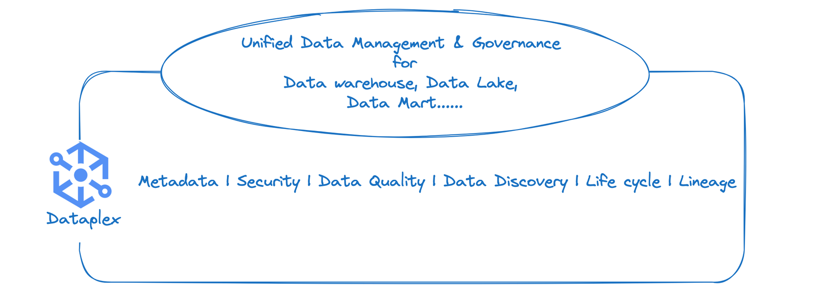
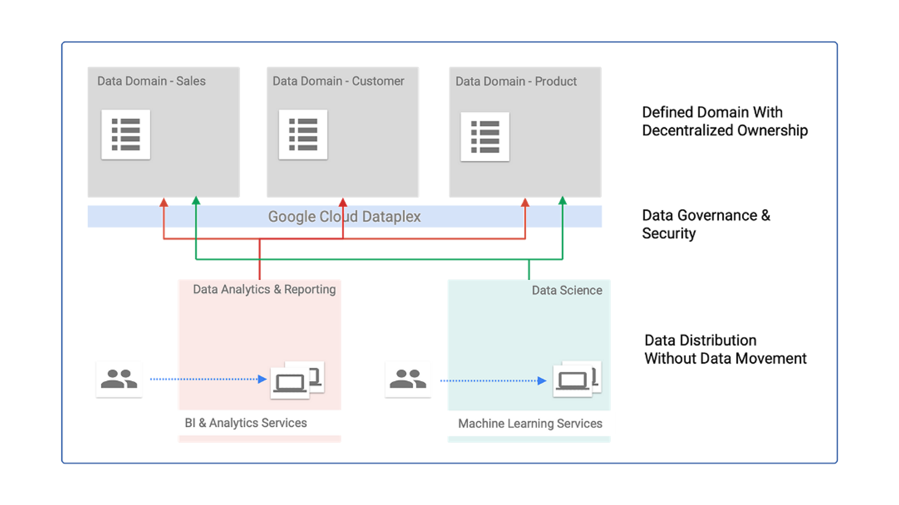

Content Outline
- How a Google Cloud-based data mesh balances speed of setup and team autonomy.
- How a minimal self-serve platform can be built with Git and Terraform templates.
- How data products use Dataflow, BigQuery, Pub/Sub, and Cloud Storage ports.
- How Dataplex supports governance, discovery, and policy enforcement across domains.
- How official data mesh architecture principles map to platform and product responsibilities.
- How producer and consumer workflows operate in a shared cloud environment.
- Which optional components improve discoverability, quality, and governance.
- What tradeoffs apply to scalability, lock-in, and operational effort.
S01 - Platform Context and Objectives
This module presents a practical Google Cloud architecture for a self-serve data mesh platform.
The design targets a middle ground between quick onboarding and meaningful domain autonomy.
The operating model includes data-producing teams, a platform team, and data-consuming roles.
S02 - Core Team Structure
- Black team maintains source-aligned data products.
- White team produces and consumes analytical data products.
- Gray team owns the platform template and enablement workflow.
- Analysts and recommendation engine consume curated datasets.

S03 - Technology Building Blocks
- BigQuery provides scalable analytical storage and SQL access.
- Dataflow powers batch and streaming transformation pipelines.
- Pub/Sub supports event-driven ingestion and decoupled producers.
- Cloud Storage enables object-based upload and file input patterns.
- Service accounts enforce access boundaries at product level.
S04 - Minimal Platform Design
The platform interface is a versioned repository containing documentation and reusable templates.
The platform kernel is a configurable Terraform template used to provision product stacks.
This baseline keeps maintenance overhead low while still giving producers repeatable setup paths.
S05 - Data Product Pattern
Each data product is implemented as a pipeline and an owned BigQuery dataset with controlled access.
A Dataflow pipeline can ingest from Pub/Sub, BigQuery, Cloud Storage, or upstream products.
Output permissions are scoped so each consumer receives only the required data surfaces.

S06 - Push and Pull Ingestion Modes
The architecture supports push ingestion through file uploads and pull ingestion through pipelines.
Push input can start from a Cloud Storage bucket with validated schemas and transformation rules.
Pull input can combine upstream datasets and events to produce derived analytical products.


S07 - Producer and Consumer Workflows
- Producers retrieve the latest template, provision a stack, and configure pipeline sources.
- Producers define service-account policies for approved consumers and systems.
- Consumers discover products via SQL browsing and request additional access from owners.
This flow enables fast delivery while keeping ownership and authorization explicit.
S08 - Platform Extensions
The baseline platform can be expanded incrementally without replacing the core provisioning model.
- Catalog integration can improve product discoverability and metadata quality.
- Log-derived usage metrics can surface popular datasets and frequent access patterns.
- Central quality checks can publish results to improve trust in product consumption.
- A lightweight GUI can simplify onboarding metadata and reduce manual errors.

S09 - Dataplex for Data Mesh Operations
Dataplex is a unified data management and governance service for distributed data estates on Google Cloud.
In a data mesh context, Dataplex helps domain teams keep decentralized ownership while applying consistent governance policies and metadata controls.
- Cataloging and discovery: data assets are indexed and searchable across storage and analytics systems.
- Governance at scale: policy management and quality controls can be enforced consistently across domains.
- Operational visibility: metadata, lineage, and quality signals improve trust and reuse of domain data products.
- Domain autonomy with standards: each team can manage products independently while complying with shared controls.



S10 - Data Mesh Core Concepts on Google Cloud
The Google Cloud data mesh reference architecture emphasizes decentralized ownership with standardized interoperability.
- Domain-oriented ownership: each domain team owns its data products end to end, including quality and lifecycle.
- Data as a product: products must be discoverable, understandable, accessible, and governed for reuse.
- Self-service platform: shared capabilities reduce repeated engineering effort across domains.
- Federated governance: common policies are centrally defined and computationally enforced.
In practice, Dataplex supports this model by combining cataloging, governance, metadata management, and policy-driven controls.
S11 - Governance and Ownership Implications
Automated checks and catalog workflows provide a practical entry point for federated governance.
Ownership remains effective only if access control and policy boundaries are enforceable.
Governance automation should avoid central bottlenecks and preserve team delivery flow.
S12 - Architecture Fit and Tradeoffs
- Strengths: low maintenance, fast integration of native services, good team autonomy.
- Tradeoffs: cloud lock-in risk and additional effort for heterogeneous source integration.
- Best fit: small-to-medium organizations needing fast platform enablement.
Key takeaways
- A template-based GCP platform can accelerate data product onboarding with limited operational overhead.
- Dataflow plus BigQuery supports a consistent product model with controlled producer autonomy.
- Dataplex can unify discovery, governance, and quality controls across domain-owned data products.
- Service accounts are central to preserving ownership boundaries in shared services.
- Platform extensions can improve discoverability, quality, and governance without redesigning the core.